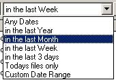

Features
"FileLister is a powerful file management and viewing utility."

Quickly browse or search your favourite directories and keep 'profiles' of your groups of files, eg: Documents, Pictures, Videos, Internet downloads, Applications - in fact you can group files in hundreds of ways.
NEW! version 4.0 can search Network folders
Browse your Files easily
View each file one at a time without having to open mulitple programs.FileList views most picture formats, all webpages, gives MP3 summaries, and views Office documents natively.
Much easier than double clicking each file in explorer.
Quick Image Finder and Browser
Go to the 'Where's that File' view and you can display the results any way you like - it can be a list, or you can view as thumbnails, full size images (like a slideshow).The above screenshot shows all photos from the digital camera containing the word 'garden'.
Select 'Pictures' as the file type, choose the 'PHOTOS' filelist (or whatever you have named you picture collection) and type in 'garden' - the results are quickly displayed as thumbnails, and you can easily view as full size images. Either view can be saved as a normal webpage, emailed or printed.
Powerful File Search
Normal file searching systems only search by filename or foldername, and most cannot search on partial words.Say you want to find a song but you dont know its name except that it has something to do with a 'dog'. Start the program 'Where's That File', select 'Music Files' from the file types and type dog into the search box.
The results shown here find the following files:
Got Beef - by Snoop Dogg
Dogs are Talking - by the Angels Ah, ha! this is the one.
In the above screenshot, you can see that it also finds a 2nd copy of 'Got Beef' in a different folder - its same file (name, date and size are the same so you can delete the 2nd copy to save space!
Advanced File Handling
Power users and IT administrators will love the powerful file management abilities of FileLister. Remember that you can have as many file lists as you like, and each filelist can contain listings of certain files from any list of folders on your hard drive, or on the network, and you can perform bulk file commands on each of the files in these lists (or you can tag files and perform the commands just of the selected files)You can copy, move, delete, create batch files, create MP3 playlists, generate a complete Hard Drive report, export the list of files, folders and full file details (ie all meta data like MP3 artist, title, song and the username of the files owner)
FileList is a great tool when you have large quantities of files stored in multiple locations.
View Files in any Format
The problem with Windows is that it only lets you view each file extension in one application only (via double clicking). FileLister can quickly switch between multiple modes when browsing through a list of files.FileLister can quickly view files in autoselected format, or use hot keys to switch views (ie view webpages in text or HTML, view Pictures files as pictures or switch to details mode (date, filesize, width, height)
Filter by Date
 So you are browsing through your list of files and you decide you only want to see files in the last week - simply change the 'Any Dates' dropdown list to 'in the last week' and the filelist is refreshed to only show those files.This screenshot shows source code modified in the last week. Note that in this case the 'Source Code' profile was setup to include JPG files, as there are no hard and fast rules about profiles - you can set them up any way you like.
Take Control of your Files!
This software will make looking for files so much easier that you will wonder how you did without it. It truly is a great way for anyone to find information out of the thousands of files on your hard disks or even across your LAN. (using mapped drives or UNC folder names such as \\server\public )
Lets face it - as you use your computer more and more, you will have probably outgrown the c:\My Documents folder and created a number of separate directories and subdirectories to try and keep them in some sort of order. FileLister puts you back in charge of your information.
Order now and you can download the full version immediately!
Download a 30 day
trial version (2.3 MBytes) or
$34.95 US